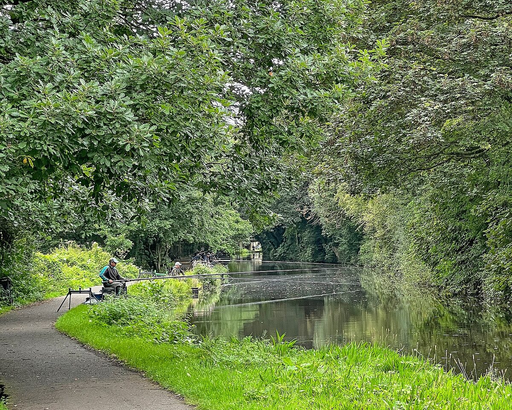

Odmiany metody spławikowej
Bat — najprostsza szkoła spławika
Bat to teleskopowa wędka bez przelotek i kołowrotka, najczęściej 4–8 m, z zestawem przywiązanym bezpośrednio do szczytówki (na łącznik lub gumkę). Linka ma długość zbliżoną do kija, więc łowimy w stałej odległości od brzegu — to ogromna zaleta dla precyzji nęcenia i prezentacji. Bat jest lekki, szybki w przygotowaniu i tani, dlatego od dekad pozostaje najlepszym sprzętem na start: uczy budowy zestawu, zacięcia i holu bez komplikacji związanych z kołowrotkiem. Sprawdza się na kanałach, starorzeczach, stawach i przy łowieniu drobnicy oraz średniej płoci, wzdręgi czy leszcza blisko brzegu.
Bolonka — spławik prowadzony w nurcie
Bolonka (od włoskiej Bolonii) to teleskopowa wędka z przelotkami, zwykle 5–7 m, łączona z kołowrotkiem o płynnym oddawaniu żyłki. Jej żywiołem jest rzeka: pozwala prowadzić spławik z nurtem na dystansie kilkudziesięciu metrów, kontrolując przepływ przez przytrzymywanie żyłki palcem na szpuli. Długi kij umożliwia trzymanie linki nad wodą, dzięki czemu nurt nie wybrzusza żyłki i nie przyspiesza nienaturalnie zestawu. Klasyczna metoda na płoć, klenia, jelca, brzanę i certę w rzekach o umiarkowanym i szybszym uciągu.
Match (metoda wagglerowa) — dystans na wodzie stojącej
Match to trzyczęściowa wędka 3,9–4,5 m z dużą liczbą małych przelotek, którą wyrzuca się waggler — spławik mocowany tylko za dolny koniec, często z własnym obciążeniem (loaded). Pozwala łowić 20–40 m od brzegu, czyli tam, gdzie bat ani tyczka nie sięgają. Po rzucie żyłkę zatapia się (szybki ruch szczytówką pod wodą i kilka obrotów korbką), aby wiatr i prąd powierzchniowy nie przesuwały zestawu. Metoda dominuje na jeziorach, zbiornikach zaporowych i komercyjnych łowiskach karpowych przy łowieniu płoci, leszcza i karasia na dystansie.
Tyczka — precyzja zawodnicza
Tyczka to wieloczęściowy kij 9–13 m bez przelotek, z amortyzatorem gumowym w szczytówce, do którego wiąże się krótki zestaw. Łowi się „nad spławikiem": zestaw opuszcza się dokładnie w nęcony punkt, a prezentację kontroluje z dokładnością do centymetrów. To najprecyzyjniejsza odmiana spławika — i dlatego standard na zawodach. Wymaga jednak osprzętu (rollery do odkładania, kit-y z różnymi amortyzatorami, platforma) oraz wprawy w rozkładaniu i skracaniu kija podczas holu. Dla amatora świetną namiastką jest krótsza tyczka 5–7 m, tzw. whip, z zestawem na stałe.
Sondowanie i gruntowanie łowiska
Po co gruntować i jak to zrobić
Gruntowanie to wyznaczenie rzeczywistej głębokości w punkcie łowienia — fundament metody spławikowej, bo większość ryb białych żeruje przy dnie lub tuż nad nim. Najprościej użyć gruntomierza (ciężarka zapinanego na haczyk): jeśli spławik tonie, jest za płytko ustawiony; jeśli leży lub wystaje za bardzo, zestaw jest za głęboki. Przesuwaj spławik aż do momentu, gdy antenka wystaje tak, jakby gruntomierz ledwo dotykał dna. Sondując kilka punktów wokół (bliżej, dalej, w lewo, w prawo), znajdziesz spadki, stoliki i rynny — czyli miejsca, gdzie warto położyć zanętę.
Czytanie dna i wybór punktu
Ryby białe gromadzą się tam, gdzie zmienia się ukształtowanie dna: u podnóża skarpy, na granicy twardego i miękkiego podłoża, przy krawędzi roślinności. Na rzece szukaj wypłyceń przechodzących w dołki, warkoczy nurtu i tzw. rynien za przeszkodami. Gruntomierzem wyczujesz też charakter dna — miękki muł „przytrzymuje" ciężarek, żwir oddaje wyraźne stuknięcie. Punkt łowienia wybierz raz i trzymaj się go: rozrzucanie zanęty i zestawu po całym łowisku rozprasza ryby zamiast je koncentrować.
Budowa zestawu spławikowego
Spławiki — kształty i wyporność
Kształt spławika dobiera się do wody. Smukłe, igiełkowate antenki do wody stojącej i delikatnych brań; ciało kropli lub odwróconej kropli do nurtu, bo stabilnie „siedzi" przy przytrzymaniu; kuliste i beczułkowate do silnego uciągu i prowadzenia. Wyporność (gramatura) zależy od głębokości, dystansu i siły prądu: na płytkiej, stojącej wodzie wystarcza 0,5–1,5 g, na rzece używa się 2–8 g i więcej. Zasada: tak lekko, jak się da, ale na tyle ciężko, by zestaw był stabilny i szybko osiągał strefę łowienia.
Śruciny i rozkład obciążenia
Obciążenie główne (większe śruciny lub oliwka) umieszcza się zwykle w 2/3 głębokości, a poniżej 1–3 mniejsze śruciny sygnałowe, z najmniejszą (podpórką) 10–30 cm od haczyka. Skupiony rozkład przyspiesza opadanie i przebija drobnicę w połowie wody; rozciągnięty rozkład (śruciny rozłożone równomiernie) daje powolne, naturalne opadanie przynęty — zabójcze, gdy ryby biorą „na opad". Śruciny zaciskaj delikatnie, najlepiej miękkie (bezołowiowe tam, gdzie regulamin tego wymaga), aby nie osłabiać żyłki.
Żyłka główna, przypon i haczyk
Linka główna w spławiku to zwykle żyłka 0,12–0,18 mm, do większych ryb 0,20 mm. Przypon wiąże się zawsze cieńszy od głównej o ok. 0,02 mm (np. główna 0,14, przypon 0,12), żeby przy zaczepie tracić tylko haczyk. Długość przyponu: 15–25 cm standardowo, dłuższy (30–50 cm) przy braniach na opad, krótszy przy pewnych braniach z dna. Haczyki: nr 18–22 do pojedynczego białego robaka i ochotki, 14–16 do kukurydzy i ciasta, 10–12 do pęczka rosówek czy łowienia większego leszcza i lina.
Wyważenie zestawu
Prawidłowo wyważony spławik wystaje z wody tylko antenką — ciało jest całkowicie zatopione. Takie wyważenie sprawia, że ryba przy braniu nie czuje oporu, a najdelikatniejsze skubnięcie widać jako drgnięcie lub podniesienie antenki (branie „na podnoszenie", typowe dla leszcza). Zestaw wyważaj w domu w wysokim naczyniu albo na łowisku, dokładając najdrobniejsze śruciny. Przeważony spławik tonie od falowania, niedoważony — maskuje brania. To detal, który w spławiku decyduje o wszystkim.

Prezentacja przynęty
Przystawka i łowienie w wodzie stojącej
W wodzie stojącej podstawą jest tzw. przystawka: przynęta leży na dnie lub podpórka dotyka dna, a zestaw stoi nieruchomo w nęconym punkcie. Co kilka minut warto delikatnie unieść i opuścić zestaw albo przeciągnąć go o 10–20 cm — ruch przynęty często prowokuje branie. Przy braniach na opad ustaw zestaw płycej i obserwuj, czy antenka wynurza się w „swoim" czasie; opóźnienie oznacza, że ryba zatrzymała przynętę w toni.
Wleczenie i przytrzymanie w nurcie
Na rzece zestaw prowadzi się z nurtem, ustawiony tak, by przynęta wlokła się tuż nad dnem lub po dnie (wleczenie). Kluczowa technika to przytrzymanie: na moment hamujesz spływ żyłki palcem na szpuli, przez co przynęta unosi się znad dna i wyprzedza zestaw — wygląda jak naturalnie porwany przez prąd pokarm. Wiele brań klenia, płoci czy brzany pada właśnie w chwili przytrzymania. Prowadź zestaw zawsze tym samym torem, przez nęconą smugę, i kontroluj, by żyłka między szczytówką a spławikiem nie tworzyła brzucha na wodzie.
Zanęcanie
Zanęta — skład, wilgotność, kule
Zanęta spławikowa to baza (bułka tarta, biszkopt, śruty zbożowe) plus dodatki smakowo-zapachowe i przynęta w zanęcie (robaki, kukurydza). Nawilżaj ją etapami: po pierwszym nawilżeniu odczekaj 15–20 minut, aż wchłonie wodę, i dopiero koryguj. Na wodę stojącą kule powinny rozpadać się szybko i pracować w toni lub na dnie; na rzekę zanętę dociąża się gliną lub żwirem, by kule rozbijały się dopiero przy dnie, a nurt nie znosił ich poza łowisko. Nęcenie: na start 3–6 kul wielkości pomarańczy, potem regularne, drobne donęcanie — np. kulka co kilkanaście minut lub po każdej rybie.
Dyscyplina nęcenia
Najczęstszy błąd to nęcenie chaotyczne: raz dużo, raz wcale, raz bliżej, raz dalej. Ryby białe reagują na regularność — mała, ale stała dawka pokarmu utrzymuje stado w punkcie, nie przekarmiając go. Zimą i wczesną wiosną nęć symbolicznie (kilka garści przez całą zasiadkę), latem możesz pozwolić sobie na więcej. Pamiętaj też o lokalnych regulaminach: niektóre łowiska ograniczają ilość zanęty lub zakazują nęcenia całkowicie.
Przynęty na ryby białe
Białe robaki, ochotka, kukurydza, ciasto
Białe robaki (larwy much) to najbardziej uniwersalna przynęta spławikowa — łowi wszystko, od ukleja po leszcza; zakłada się 1–3 sztuki za skórkę przy ciemniejszym końcu. Ochotka (larwa komara) jest niezastąpiona w zimnej wodzie i przy grymaszących rybach, wymaga jednak drobnych haczyków i delikatnego zakładania. Kukurydza słodka selekcjonuje większą płoć, leszcza, lina i karasia, a przy okazji opiera się drobnicy. Ciasto i pasty (chlebowe, ziemniaczane, gotowe pasty protein) świetnie działają latem na karasia i lina; trzymają się haczyka krócej, więc wymagają częstszej kontroli. Warto mieć przy sobie 2–3 przynęty i rotować nimi, gdy brania słabną.
Gatunki ryb białych w metodzie spławikowej
Płoć — najpospolitsza, bierze delikatnie, ceni drobne przynęty i lekkie zestawy. Leszcz — żeruje przy dnie, charakterystyczne brania „na podnoszenie", lubi słodkie zanęty i pęczek robaków. Wzdręga — żeruje płycej, często tuż pod powierzchnią przy roślinności. Karaś i lin — ryby ciepłej, zarośniętej wody; lin wymaga mocniejszego przyponu i cierpliwości przy długich, „mielonych" braniach. Kleń i jelec — rzeczni sprinterzy, łowieni z prowadzenia. Ukleja — idealna do nauki szybkiego łowienia na zestaw przypowierzchniowy. Krąp i okoń trafiają się przy okazji niemal zawsze.
Pory roku w spławiku
Wiosną ryby wychodzą na płytkie, szybko nagrzewające się zatoki — łów lekko, nęć oszczędnie, najlepsze bywają godziny południowe. Latem żerowanie przesuwa się na świt i wieczór; w dzień szukaj cienia, krawędzi roślinności i głębszej wody, działa kukurydza i ciasto. Jesienią ryby zbijają się w stada na głębszych stanowiskach — kluczem jest odnalezienie stada, potem brania potrafią być seryjne; wracają robaki i ochotka. Zimą (na wodach otwartych) łów najdelikatniej jak się da: maleńkie spławiki, ochotka, minimalne nęcenie, najgłębsze partie łowiska. Zawsze sprawdzaj aktualne okresy i wymiary ochronne w regulaminie PZW.
FAQ — najczęstsze pytania
Bat czy bolonka na początek?
Jeśli łowisz głównie na wodzie stojącej — bat: prostszy, tańszy, uczy podstaw bez kołowrotka. Jeśli masz pod domem rzekę — bolonka, bo umożliwia prowadzenie zestawu w nurcie. Wiele osób zaczyna od batu 5–6 m i dokłada bolonkę w drugim sezonie.
Dlaczego widzę brania, ale nie mogę zaciąć?
Najczęściej winny jest za duży haczyk lub za gruby przypon, ewentualnie złe wyważenie (ryba czuje opór i wypluwa przynętę). Zejdź z rozmiarem haczyka, skróć lub wydłuż przypon i sprawdź, czy spławik nie jest niedoważony. Czasem pomaga też odczekanie ułamka sekundy dłużej przed zacięciem.
Jak głęboko ustawić zestaw, gdy nie znam łowiska?
Zawsze zacznij od gruntowania — bez tego łowisz na ślepo. Punktem wyjścia jest przynęta tuż przy dnie; jeśli brań brak, podnoś zestaw co 20–30 cm, bo ryby mogły wyjść w toń, zwłaszcza latem.
Czy spławik działa na drapieżniki?
Tak — zestaw spławikowy z żywą lub martwą rybką to klasyka łowienia okonia i szczupaka. Pamiętaj jednak, że używanie żywca podlega ograniczeniom regulaminowym; zasady (w tym dozwolone gatunki na przynętę) sprawdzaj każdorazowo w aktualnym regulaminie PZW i regulaminie łowiska.
Ile zanęty zabrać na kilkugodzinną zasiadkę?
Na wodę stojącą zwykle wystarcza 1,5–2,5 kg suchej mieszanki plus przynęty do zanęty; na rzekę, gdzie nurt rozprasza pokarm, licz 3–5 kg z gliną. Lepiej zostawić zapas w wiadrze niż wsypać wszystko na start — przekarmionego łowiska nie da się „odkarmić".
Źródła i weryfikacja
Poradnik opisuje techniki i budowę zestawów spławikowych w ujęciu praktycznym, bez obiecywania konkretnych wyników połowu. Opracowano na podstawie ogólnodostępnej literatury wędkarskiej i doświadczeń metody spławikowej. Przed łowieniem zawsze weryfikuj obowiązujące przepisy — okresy i wymiary ochronne, limity, zasady nęcenia i używania przynęt — w aktualnym regulaminie amatorskiego połowu ryb PZW oraz w regulaminach konkretnych łowisk.
Prawo a praktyka
Prawo a praktyka — stan na 17 lipca 2026: rozporządzenie ELI opisuje krajowy zakres okresów i wymiarów ochronnych. Ten poradnik przedstawia doświadczenie redakcyjne, nie uniwersalny przepis ani instrukcję legalności. Aktualne zezwolenie i regulamin gospodarza konkretnej wody mogą wprowadzać zasady ostrzejsze i mają pierwszeństwo.
Komentarze